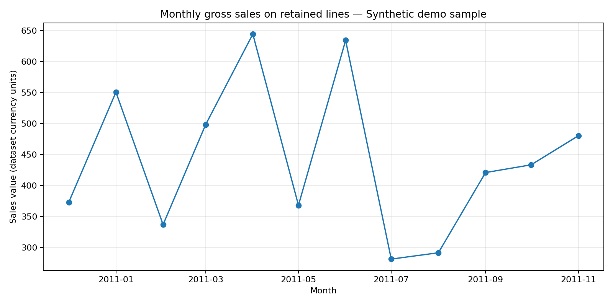
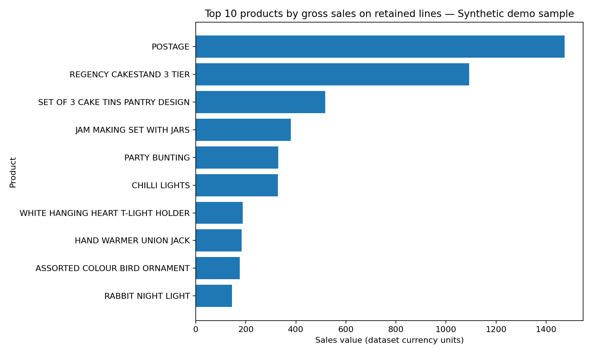
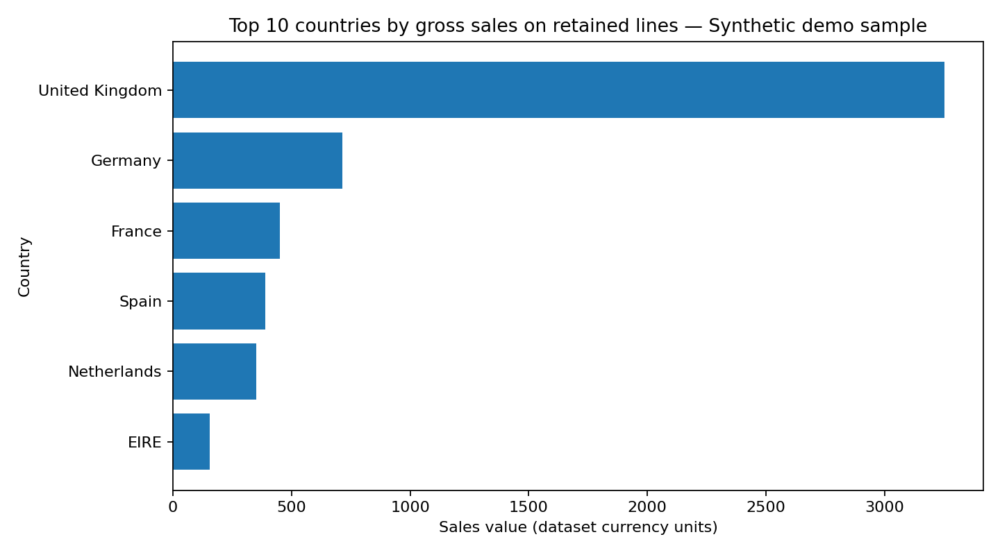

Monthly sales trend
Gross sales on retained positive lines by month.


A reproducible sales-analysis demo combining transaction cleaning, business KPIs, SQL reporting and a dashboard blueprint designed for Infor Birst.
The Birst dashboard is a planned implementation guide, not yet a deployed dashboard in a Birst tenant.
Calculated after the documented cleaning rules.
2010-12-04 → 2011-11-27
Static outputs from the current demo dataset.
Gross sales on retained positive lines by month.

Products ranked by retained-line sales value.

Countries ranked by retained-line sales value.

Flags can overlap and must not be summed to estimate unique excluded rows. Review the filter logic before interpreting any result.
Designed to be reproducible and reviewable.
Read a compatible CSV/XLSX with invoice, product, quantity, price, date and country fields.
Normalize column names, parse dates, flag cancellation-like invoices and filter invalid lines.
Calculate monthly sales, AOV, product/country ranks and quality summaries.
Define fact/dimension concepts, KPI tiles, charts and interactive filters.
Suggested fact: transaction line; dimensions: Date, Product/Stock Code, Country and Customer (when known). Proposed pages cover executive KPIs, product/geography, and data quality.
Do not claim a Birst dashboard was implemented until you have built and validated it in your own Birst environment.
Open Birst blueprintExplore the script, queries, tests, definitions and generated outputs.